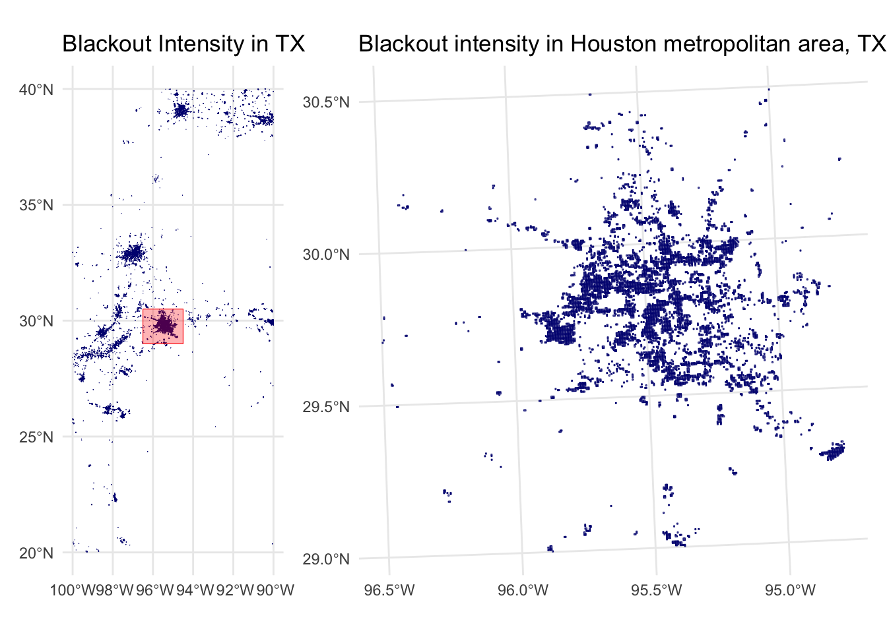
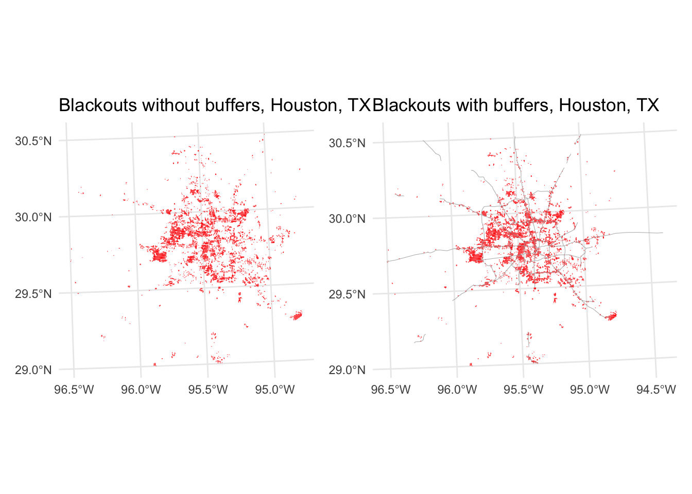
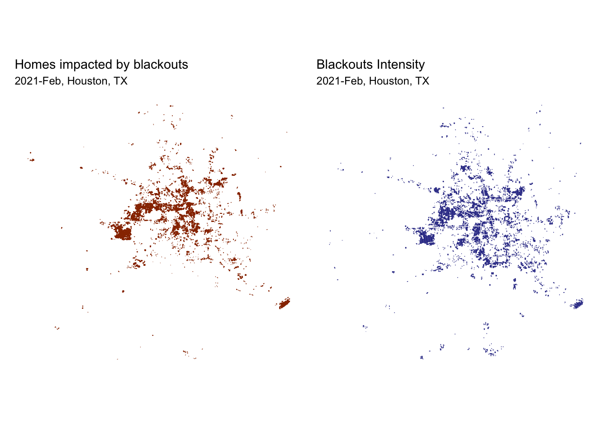
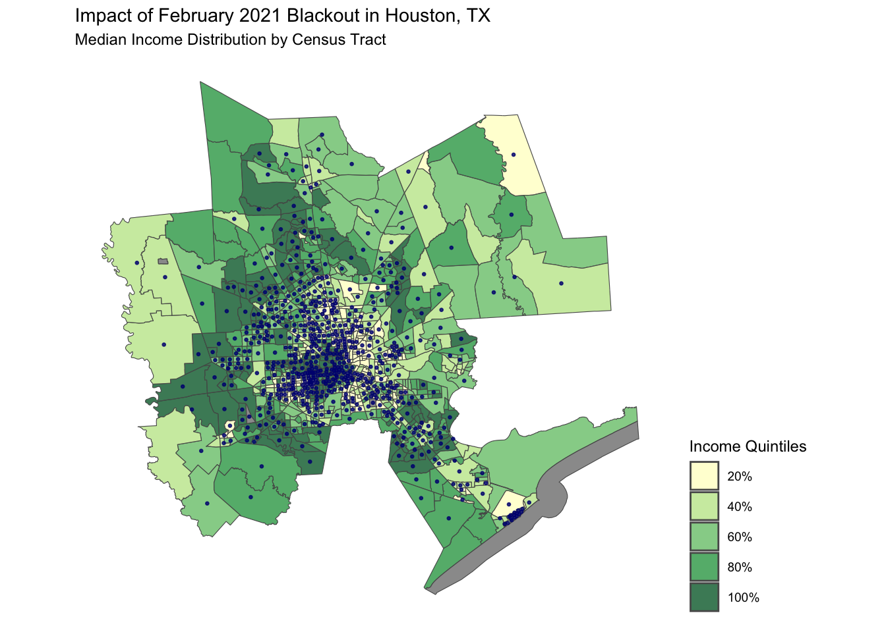
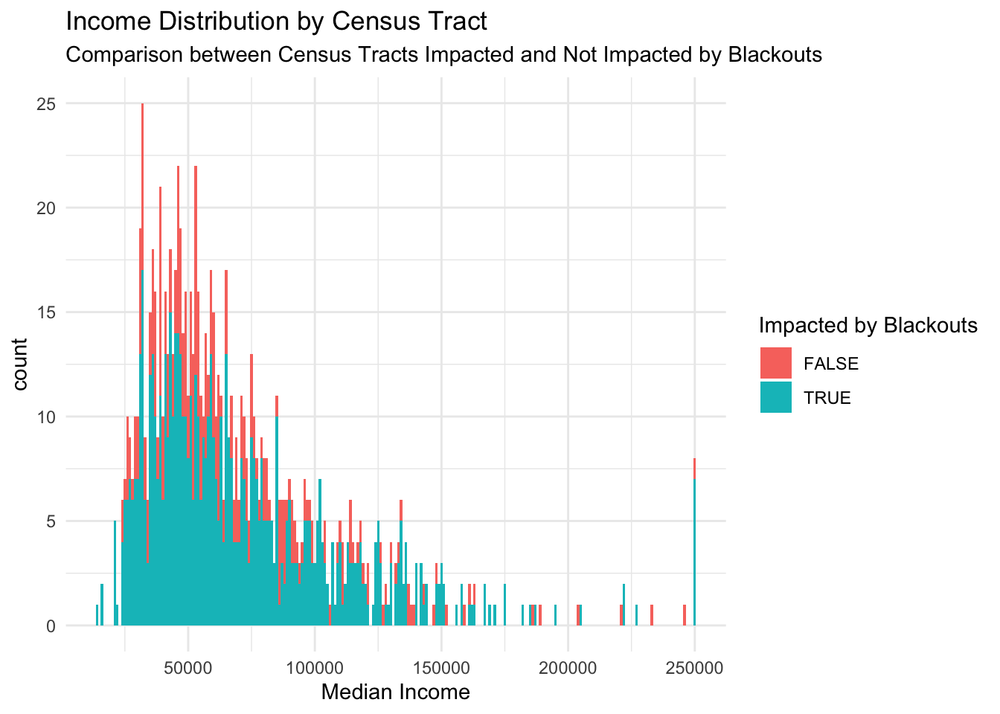

Analysis of the Socio-Economic Disparities During the Texas Electric Grid Blackout in 2021
Author
Oksana Protsukha
Overview
Background
During the period from February 13 to 20, 2021, the southwest U.S. experienced an unusual winter storm, “Uri.” Texas was particularly badly impacted due to a combination of multiple factors. Importantly, Texas’s electricity is supplied by the intra-state grid operator ERCOT, not connected to the other two major grids that serve the United States and Canada. During the winter storm, ERCOT lost almost half of its generation capacity and didn’t have the infrastructure to tap into the resources of the other two grids. As a result, major blackouts during February 15-18, 2021 left more than 10 million people without electricity at the peak of the winter storm, with some enduring several days without power. Services dependent on electricity, such as drinking water treatment and medical services, were affected as well. More than 200 people died directly or indirectly as a result of the crisis [2].
According to the report[1] produced by The University of Texas at Austin, the outages were caused by multiple factors, including but not limited to:
All types of generation technologies failed.
Demand forecasts for severe winter storms were too low.
Some power generators were inadequately weatherized.
Failures within the natural gas system.
Natural gas in storage was limited.
The Texas grid didn’t return to normal operations until Friday, February 19.
Objective
In this analysis, I explored whether socio-economic factors, specifically household income, influenced the recovery of electricity services in impacted neighborhoods.
Research question: Did census tracts within low-income quintiles experience more delays in the recovery of electricity services compared to those in higher income levels?
Note: Many NASA Earth data products are distributed in 10x10 degree tiles in sinusoidal equal-area projection. Tiles are identified by their horizontal and vertical position in the grid. Houston lies on the border of tiles h08v05 and h08v06, requiring the analysis of two tiles for each day.
Processed data is available in VNP46A1 folder.
VNP46A1.A2021038.h08v05.001.2021039064328.h5.tif: tile h08v05, collected on 2021-02-07
VNP46A1.A2021038.h08v06.001.2021039064329.h5.tif: tile h08v06, collected on 2021-02-07
VNP46A1.A2021047.h08v05.001.2021048091106.h5.tif: tile h08v05, collected on 2021-02-16
VNP46A1.A2021047.h08v06.001.2021048091105.h5.tif: tile h08v06, collected on 2021-02-16
Dataset 2: Roads (shapefiles)
A Geopackage (.gpkg file) containing just the subset of roads that intersect the Houston metropolitan area. Source data: Geofabrik’s download sites [4]
gis_osm_roads_free_1.gpkg
Dataset 3: Houses (shapefiles)
A Geopackage (.gpkg file) containing only houses in the Houston metropolitan area. Source data: Geofabrik’s download sites [4]
The folderACS_2019_5YR_TRACT_48.gdb is an ArcGIS “file geodatabase”, a multi-file proprietary format that’s roughly analogous to a GeoPackage file [6].
I relied on geospatial data and tools to identify locations impacted by the blackouts. Specifically, I used raster and vector data (refer to the Data section) to visualize the correlation between the blackouts and households income.
Limitations
The scope of the analysis was limited to Houston metropolitan area.
Analysis was done only for one day (February 16th 2021) out of 4-5 days of the total blackout period.
Only income was considered in the analysis.
Analysis
The next few sections provide the steps I applied to complete the analysis. The code is available in the github repository: texas-grid-blackout-2021
Setup
I used the following libraries throughout the analysis:
As the first step in the analysis, I identified the areas affected by blackouts in the Houston Metropolitan Area on February 16, 2021. To do so, I compared the light intensity data before the storm on February 7, 2021, with the data during the blackout event February 16, 2021, using VIIRS data.
Assumption: any location that experienced a drop of more than 200 nW cm-2sr-1 experienced a blackout.
I loaded satellite raster data (files with extention *.tif) using stars package:
Code
# Load datant_20210207_tile5 <-read_stars('data/VNP46A1/VNP46A1.A2021038.h08v05.001.2021039064328.tif')nt_20210207_tile6 <-read_stars('data/VNP46A1/VNP46A1.A2021038.h08v06.001.2021039064329.tif')nt_20210207 <-st_mosaic(nt_20210207_tile5, nt_20210207_tile6) # combine two tilesnt_20210216_tile5 <-read_stars('data/VNP46A1/VNP46A1.A2021047.h08v05.001.2021048091106.tif')nt_20210216_tile6 <-read_stars('data/VNP46A1/VNP46A1.A2021047.h08v06.001.2021048091105.tif')nt_20210216 <-st_mosaic(nt_20210216_tile5, nt_20210216_tile6) # combine two tiles
Next, I created a raster with the difference in light intensity between February 7 and 16, 2021 and reclassified it to the locations that experienced a drop in light intensity of more than 200 nW cm-2sr-1.
- All locations that experienced a drop of 200 or less nW cm-2sr-1 were assigned NA.
# create a mask with blackout locationsblkout <- (nt_20210207 - nt_20210216) >200# set locations that didn't experience blackout to NA blkout[blkout ==FALSE] <-NA
To proceed, I narrowed down the blackout locations to the Houston metropolitan area by cropping the blackout raster to Houston metropolitan area. To do so I converted the raster with the blackout locations into an sf object and constructed a polygon with Houston boundaries.
⚠️To maintain an accuracy of analysis I applied EPSG: 3083 (NAD83 / Texas Centric Albers Equal Area) projection for the cropped blackout dataset, specifically the dataframe with Houston metropolitan area geometries.
# convert blackout mask to sf objectblkout_sf <- blkout %>%st_as_sf() %>%st_make_valid() # fix invalid geometries# define coordinates of the Houston metropolitan areahstn_coords <-rbind(c(-96.5, 29), c(-96.5, 30.5), c(-94.5, 30.5), c(-94.5, 29),c(-96.5, 29)) # create a polygon of the Houston area hstn <-st_polygon(list(hstn_coords)) %>%st_sfc(crs ="EPSG:4326")# crop the blackout mask to the Houston areahstn_blkout <- blkout_sf[hstn, ] %>%st_transform(crs ="EPSG:3083")

Exluding roads from the area of interest
Highways in the United States are commonly lit during the night, contributing in a large proportion to the lights visible from space. However, the highways and the area adjustent to them don’t have any households, and therefore can distort the analysis results by mistakenly identifying areas with reduced traffic as areas without power. To minimize the error, I excluded any areas within 200-meter radius of all highways from the analysis.
I used the following sql query to load the roads dataset from gis_osm_roads_free_1.gpkg:
query <- "SELECT * FROM gis_osm_roads_free_1 WHERE fclass='motorway'"
Code
# read data from SQLquery <-"SELECT * FROM gis_osm_roads_free_1 WHERE fclass = 'motorway'"highways <-st_read("data/gis_osm_roads_free_1.gpkg", query = query,quiet =TRUE) %>%select('geom') %>%# keep only geometriesst_transform(crs =st_crs(hstn_blkout)) # reproject highways dataframe to the crs of Houston blackout dataframe# verify the CRS are the sameprint(paste0('CRS of of the highways and Houston blackout dataframes match: ', crs_match <-st_crs(highways) ==st_crs(hstn_blkout)))
In the following step, I determined the areas within 200-meter radius and excluded these areas from the main Houston blackout dataset using spatial subsetting.
# create a buffer of 200 m around highwayshwy_buffer <-st_buffer(highways, dist =200) %>%st_union() # dissolve buffers# find areas that experienced blackouts and are further than 200m from a highwayhstn_blkout_no_hwy <-st_difference(hstn_blkout, hwy_buffer)

Indentifying homes impacted by blackouts
Moving on, I identified the population of homes affected by the blackouts to explore the extent to which socio-economic factors played a role in the recovery.
I used the following sql query to load the roads dataset from gis_osm_buildings_a_free_1.gpkg:
SELECT * FROM gis_osm_buildings_a_free_1
WHERE (type IS NULL AND name IS NULL)
OR type in ('residential', 'apartments', 'house', 'static_caravan', 'detached')
Code
# read data from SQLquery_bldg <- ("SELECT * FROM gis_osm_buildings_a_free_1 WHERE (type IS NULL AND name IS NULL) OR type IN ('residential', 'apartments', 'house', 'static_caravan', 'detached')")bldg <-st_read("data/gis_osm_buildings_a_free_1.gpkg", query = query_bldg,quiet =TRUE) %>%st_transform(crs ="EPSG:3083")# verify the CRS are the sameprint(paste0('CRS of of the builduings and Houston blackout dataframes match: ', crs_match <-st_crs(bldg) ==st_crs(hstn_blkout_no_hwy)))
To obtain the population of homes affected by the blackouts in the Houston metropolitan area, I subsetted the buildings dataset using the resulting dataframe from the prior step (an sf dataframe indicating blackouts in the Houston metropolitan area beyond a 200-meter radius from highways).
# filter homes within blackout areasbldg_blkout <- bldg[hstn_blkout_no_hwy, ]
[1] "Total number of homes impacted by the blackouts: 157411"

Analyzing the impact of socioeconomic factors on recovery
Finally, I analyzed whether households income played a role on the recovery from the power outage. As a socio-economic indicator I used the income data from the 2019 US Census Tract.
I loaded data using st_read function from the sf library:
Code
# read in geometries datact_geom <-st_read('data/ACS_2019_5YR_TRACT_48_TEXAS.gdb', layer ='ACS_2019_5YR_TRACT_48_TEXAS',quiet =TRUE) %>%st_transform(crs ='EPSG:3083') %>%filter(COUNTYFP %in%c(339, 291, 167, 015, 039, 071, 157, 201, 473)) # Filter Houston counties# read in income data ct_income <-st_read('data/ACS_2019_5YR_TRACT_48_TEXAS.gdb', layer ='X19_INCOME',quiet =TRUE) %>%select(GEOID,median_income = B19013e1)
In the following step, I joined the income data on the impacted homes dataset to determine the total number of homes impacted by the blackouts.
#join the income data to the census tract geometriesct_income <- dplyr::left_join(ct_geom, ct_income,by =c("GEOID_Data"="GEOID")) %>%st_transform(crs ="EPSG:3083")# spatially join census tract data with buildings impacted by blackoutshstn_ct_blkout <-st_join(ct_income, bldg_blkout, left =TRUE) %>%group_by(NAME) %>%summarise(blackout =any(!is.na(osm_id)), median_income =first(median_income))
Code
# get the count of census tracts impacted by blackoutsct_blkout_tot_impacted <- hstn_ct_blkout %>%filter(blackout ==TRUE) %>%summarise(total =n())cat("Total census tracts in Houston area impacted by the blackouts:", ct_blkout_tot_impacted$total)
Total census tracts in Houston area impacted by the blackouts: 717
Results
I’ve visualized the analysis results using the following representations:
a map illustrating the distribution of median income across census tracts, highlighting areas affected by blackouts.
Code
# define income quintilesquintiles <-quantile(hstn_ct_blkout$median_income, probs =seq(0, 1, by =0.2), na.rm =TRUE)quintiles_labs <-c('20%', '40%' ,'60%', '80%','100%')# create a new variable with quintile labelshstn_ct_blkout$income_quintile <-cut(hstn_ct_blkout$median_income, breaks = quintiles, labels = quintiles_labs, include.lowest =TRUE)color_palette <-brewer.pal(length(quintiles_labs), "YlGn")# create centroids for census tract impacted by blackoutct_centroids <- hstn_ct_blkout %>%filter(blackout ==TRUE) %>%st_centroid()# plot a mapm1 <-ggplot() +geom_sf(data = hstn_ct_blkout, aes(fill = income_quintile), alpha =0.8) +scale_fill_manual(values =setNames(color_palette, quintiles_labs),name ='Income Quintiles') +geom_sf(data = ct_centroids, size =0.5, color ='#000080', alpha =0.8) +labs(title ='Impact of February 2021 Blackout in Houston, TX',subtitle ='Median Income Distribution by Census Tract') +theme_map() +theme(legend.position ="right")m1

a histogram that compares impacted vs non-impacted census tracts by the income level:
Code
# Plot histogramhist <- hstn_ct_blkout %>%ggplot(aes(x = median_income, fill = blackout)) +xlab('Median Income') +geom_histogram(binwidth =1000) +labs(title ='Income Distribution by Census Tract',subtitle ='Comparison between Census Tracts Impacted and Not Impacted by Blackouts',fill ='Impacted by Blackouts' ) +theme_minimal()hist

Findings
According to the analysis results, households across all levels of income distribution were affected by the blackouts. Those in the lowest income distribution were more likely to experience the impact than not. This is unsurprising, considering that the outage was caused by a rare winter storm event for which grid operators were not prepared. Any household connected to the grid was affected by the blackouts.
Additional analysis is required to understand whether lower income households were disproportionately impacted by the outage. Specifically, we need to examine the speed at which grid services were restored in the impacted census tracts and whether socioeconomic factors played a role.
The primary limitation of the analysis is the lack of data on household activities for the duration of blackouts. Additionally, it does not incorporate other socioeconomic factors, such as education and race.
Next steps
Extend the analysis to the rest of the period of the blackouts: February 15-19, 2021.
Include other socio-economic indicators: unemployment rate, race, education level.
Attribution
The analysis was completed as part of the [Geospatial Analysis & Remote] Sensing(https://ryoliver.github.io/EDS_223_spatial_analysis/) coursework.
The data was prepared by Dr. Ruth Oliver, Bren School of Environmental Science & Management, University of California, Santa Barbara
Citations
[1] UTAustin (2021) EventsFebruary2021TexasBlackout 20210714.Pdf. https://energy.utexas.edu/sites/default/files/UTAustin%20%282021%29%20EventsFebruary2021TexasBlackout%2020210714.pdf. Accessed 15 Dec. 2023.
[2] Svitek, Patrick. “Texas Puts Final Estimate of Winter Storm Death Toll at 246.” The Texas Tribune, 2 Jan. 2022, www.texastribune.org/2022/01/02/texas-winter-storm-final-death-toll-246. Accessed 13 Nov. 2023.
[3] Level-1 and Atmosphere Archive & Distribution System Distributed Active Archive Center - LAADS DAAC. https://ladsweb.modaps.eosdis.nasa.gov/. Accessed 15 Dec. 2023.
[4] Geofabrik Download Server. https://download.geofabrik.de/. Accessed 15 Dec. 2023.
[5] https://www.census.gov/programs-surveys/acs
[6] https://desktop.arcgis.com/en/arcmap/latest/manage-data/administer-file-gdbs/file-geodatabases.htm